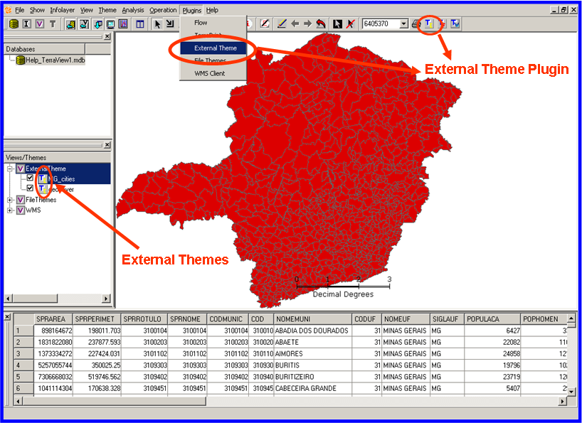
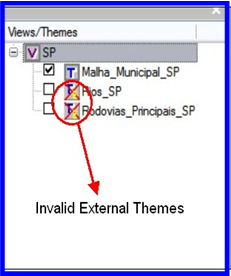

External Theme TerraView
Plugin
User Guide
Author:
Karine Reis Ferreira (karine@dpi.inpe.br)
Date:
12/10/2007
Introduction
1. Introduction
The External Theme plugin is a tool that enables the creation of external themes in TerraView. An external theme is a link to a theme that is stored in another TerraView database, which is called remote database. Therefore, the geometries and attributes of an external theme are stored in another database and there are no layers in the local database associated to external themes.

Figure 01 - TerraView with external themes
When a database is opened in TerraView, all themes are loaded in the Views and
Themes Tree. If the themes are external and TerraView cannot connect to the
remote database where geometries and attributes are stored, these external themes
will be marked as invalid. Invalid external themes have a different icon, as
shown in Figure 02.

Figure 02 Invalid external themes in TerraView